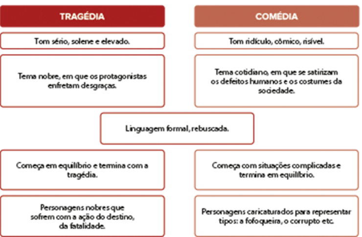
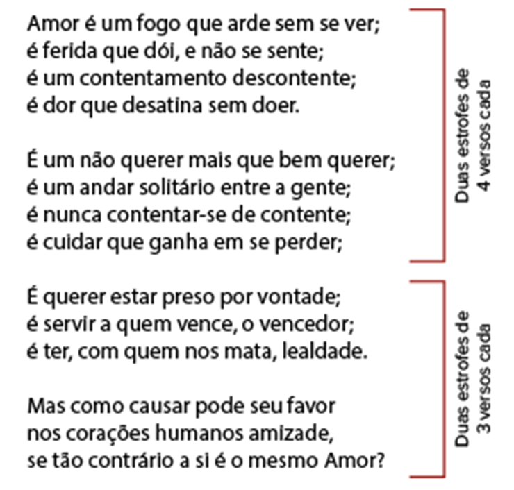

LEIGHTON, Frederic. A morte simulada de Julieta, 1856-58. Óleo sobre tela. Galeria de Arte da Austrália do Sul, Adelaide
A literatura exprime a atitude do ser humano diante dos desafios do mundo e da vida. É uma ferramenta que nos ajuda a redimensionar a nossa visão e a contemplar a beleza da diversidade ao nosso redor. A partir do momento em que adentramos ao mundo das letras, nos tornamos sujeitos mais empáticos, sensíveis, conhecedores, éticos e criativos.
Usamos a palavra artística para, através da prosa ou da poesia, narrar grandes feitos, cantar sentimentos, representar nossos dramas, eternizar nosso estilo de vida. A literatura é, pois, uma forma legítima de comunicar, de partilhar a existência humana de diferentes épocas e lugares.
- A pintura de Frederic Leighton retrata uma cena da peça teatral Romeu e Julieta, de William Shakespeare. Você conhece essa história? Como se deu, na tragédia, a morte de Julieta?
- Em sua opinião, por que o artista resolveu registrá-la em uma tela?
- Você acredita que apenas sentimentos bons podem ser tratados de forma poética?
Neste capítulo, serão abordadas as habilidades EM13LP46, EM13LP49.
Romeu e Julieta
Prólogo
(Entra o Coro)
Coro
Duas casas, iguais em seu valor,
Em Verona, que a nossa cena ostenta,
Brigam de novo, com velho rancor,
Pondo guerra civil em mão sangrenta.
Dos fatais ventres desses inimigos
Nasce, com má estrela, um par de amantes,
Cuja derrota em trágicos perigos
Com sua morte enterra a luta de antes.
A triste história desse amor marcado
E de seus pais o ódio permanente,
Só com a morte dos filhos terminado,
Duas horas em cena está presente.
Se tiverem paciência para ouvir-nos,
Havemos de lutar para corrigir-nos.
(Sai.)
[...]
SHAKESPEARE, William; LEÃO, Liana de Camargo (Org.). Grandes obras de Shakespeare. Bárbara Heliodora (Trad.). Rio de Janeiro: Nova Fronteira, 2018.
- O prólogo, em uma peça de teatro, é uma cena inicial na qual são anunciados elementos elucidativos sobre a trama que irá se desenrolar. No prólogo em questão, apesar de o primeiro verso sugerir a igualdade das “duas casas”, que representam as famílias rivais Capuleto e Montéquio, o enredo é marcado por muitos contrastes. Quais são evidenciados nesses versos?
- O fato de a história ser apresentada em versos prejudica seu entendimento? Comente.
Uma história trágica
O trecho acima é parte de uma tradução da peça Romeu e Julieta, obra que se tornou célebre na versão de William Shakespeare (1565-1616), dramaturgo inglês considerado um dos mais influentes da literatura, com obras que se destacaram pela linguagem poética e profundidade filosófica. A história a ser contada é apresentada inicialmente na voz do coro: duas famílias rivais, Montéquio (família de Romeu) e Capuleto (família de Julieta), cultivam um ódio irracional, incômodo a toda a cidade. O coro, no teatro grego clássico, era composto de um grupo de pessoas que narravam e, por vezes, cantavam e comentavam ações dramáticas em cena.
Shakespeare faz questão de enfatizar que o conflito principal não é a loucura dos amantes, mas a dos pais, cuja teimosia em manter acesa uma guerra vã compromete a paz de todos ao redor. Tanto Julieta quanto Romeu iniciam a peça como filhos resignados a perpetuar as intenções de suas famílias, até que o encontro fatal em um baile de máscaras fará com que eles iniciem uma paixão proibida.
Uma das cenas mais célebres da obra é o momento em que Julieta está no balcão da janela de sua casa e Romeu, aproximando-se, fica à espreita. Ele, então, compara a beleza de Julieta à dos astros, considerando o lume de seus olhos em contraste com a escuridão em que jaz a Terra sem a presença dela. Os versos possuem alta carga conotativa.
Romeu
(Julieta aparece ao alto.)
Que luz surge lá no alto, na janela?
Ali é o leste, e Julieta é o Sol.
Levante, Sol, faça morrer a Lua
Ciumenta, que já sofre e empalidece
Porque você, sua serva, é mais formosa.
[...]
SHAKESPEARE, William; LEÃO, Liana de Camargo (Org.). Op. cit.
Julieta, por sua vez, divaga sobre a figura de seu amado e a condenação que há em seu nome; ela suspira pela mudança do nome do rapaz, reconhecendo que o jovem não mudaria em beleza ou encanto se ostentasse um nome diferente daquele que os separa. Quando percebe que a moça também sofre, Romeu se revela e ambos se declaram apaixonados.
Romeu, Romeu, por que há de ser Romeu?
Negue o seu pai, recuse-se esse nome;
Ou se não quer, jure só que me ama
E eu não serei mais dos Capuletos.
Romeu
(à parte)
Devo ouvir mais, ou falarei com ela?
Julieta
É só seu nome que é meu inimigo:
Mas você é você, não é Montéquio!
O que é Montéquio? Não é pé, nem mão,
Nem braço, nem feição, nem parte alguma
De homem algum. Oh, chame-se outra coisa!
O que há num nome? O que chamamos rosa
Teria o mesmo cheiro com outro nome;
E assim Romeu, chamado de outra coisa,
Continuaria sempre a ser perfeito,
Com outro nome. Mude-o, Romeu,
E em troca dele, que não é você,
Me entrego por inteiro.
Romeu
Eu cobro essa jura!
Se me chamar de amor, me rebatizo:
E, de hoje em diante, eu não sou mais Romeu.
[...]
Com as asas do amor saltei o muro,
Pois não há pedra que impeça o amor;
E o que o amor pode o amor ousa tentar
[...]
SHAKESPEARE, William; LEÃO, Liana de Camargo (Org.). Op. cit.
O encontro dos jovens é o nó da trama – como cantou o coro: “Nasce, com má estrela, um par de amantes”. “Má estrela”, aqui, significa “má sorte”, porque esse encontro transgrediria a ordem no contexto familiar e transformaria em caos o mundo em que vivem. Romeu casa-se clandestinamente (às escondidas) com Julieta; o romance, portanto, nasce fadado à tragédia, uma vez que nenhuma história que se propusesse a afrontar a ordem social estabelecida poderia terminar em final feliz. Ao final, a tragédia: os pais fazem as pazes, mas os amantes morrem – confirmando o ser humano como ser falível e sujeito às intempéries, aos infortúnios da vida.
Trata-se, pois, de uma narrativa escrita em versos para ser encenada em um palco e, como todo texto dramático, para atrair o público. Três dimensões literárias importantes estão representadas na obra:
- A intenção de contar uma história → Não se trata de uma história real, visto que a literatura não tem compromisso com a verdade, apenas com a criação. Ao escrever, o autor propõe ao leitor um jogo de mimesis, de imitação, de faz de conta, quando inicia a leitura, o leitor aceita o contrato, entra no jogo e mergulha no mundo ficcional proposto pelo autor. Esse fascínio de se deixar levar pela voz do outro existe desde tempos imemoriais e perpassa a história da formação da linguagem, das artes, das civilizações.
- A preocupação estética na organização dos versos → Shakespeare não se preocupou apenas com a história a ser contada, mas também com a maneira de fazê-lo. Estabeleceu cenas, organizou versos, empregou figuras de linguagem, criou uma Verona física e social, que não é a real, mas linguística. A palavra foi usada como objeto para criação e recriação estética.
- A demarcação de falas e ações para a encenação → A peça Romeu e Julieta, desde Shakespeare, já passou por diversas traduções e adaptações. Como texto feito para o teatro, dá instruções acerca da interação entre os atores e dos elementos que circundam a cena; há um detalhamento das ações para que sejam dramatizadas.
A obra Romeu e Julieta contém traços dos três gêneros literários: narrativo, lírico e dramático. Traduz uma história de amor apreciada por leitores de diferentes idades, épocas e lugares; trata-se, portanto, de um legítimo texto literário pois, além de possuir características intrínsecas que lhe garantem essa classificação, é também reconhecida socialmente.
Gêneros literários
A divisão dos textos literários em diferentes gêneros remonta à Grécia Antiga, aos estudos de Platão (V a.C.) e Aristóteles (IV a.C.), quando a literatura era escrita somente em versos e sobrevivia pela memorização. Segundo esses filósofos, seria possível identificar três gêneros considerados mais ou menos estáveis: um mais ligado ao pensamento, outro, ao sentimento, e o último, à vontade.
É certo que não há gêneros puros, uma vez que os atributos de cada grupo se fundem, mas isolando as características predominantes é possível constatar o delineamento de três gêneros: épico, lírico e dramático. A obra Romeu e Julieta, por exemplo, é do gênero dramático, mas contém traços dos três gêneros literários. Embora tal divisão tenha sido, ao longo da história, alvo de muitas críticas, ela representa uma ferramenta útil ao estudo dos textos.
Na época medieval, as canções de gesta – espécie de poemas narrativos cultivados na França e na Inglaterra desde o século XI, em que se relatam feitos de grandes reis e cavaleiros – foram se tornando textos tão longos que dificultaram sua memorização e se converteram, naturalmente, em registros prosificados, deixando de ser cantadas para serem lidas. Por volta do século XIX, começaram a aparecer obras literárias que abandonavam o verso como forma de composição, inaugurando gêneros como o romance, o conto, a crônica etc.; o conceito de épico já não correspondia ao retrato cotidiano. Paulatinamente, o conceito de gênero épico foi se transferindo para narrativo e, hoje, abarca textos mais dinâmicos, como a novela, o romance, a piada, o conto maravilhoso, a fábula, a parábola, entre outros.
Gênero dramático
O gênero dramático corresponde aos textos dialogados, ou seja, escritos para serem encenados. A principal característica desse gênero é a ausência de um narrador, isto é, são as próprias personagens, na sucessão de suas ações, que revelam ao espectador a história a ser contada. Sua concretização é a expressão máxima da imitação, uma vez que pessoas disfarçadas lançam mão de gestos, figurinos e discursos para mobilizar a atenção e envolver a plateia.
Compare as características dos subgêneros clássicos:
A ação dramática (trama, enredo) apresenta uma sequência que se constitui em: exposição (ou introdução, no qual se apresentam fatos, personagens, espaço, tempo etc.), conflito, complicação, clímax (ponto de maior tensão) e desfecho (conclusão). Um dos elementos literários marcantes desse gênero é a catarse, já que o texto (a encenação) tem uma relação muito direta com a plateia e tem como objetivo provocar uma descarga emocional, mobilizar paixões, sensibilizar o espectador – seja desencadeando terror ou piedade.
O gênero dramático apresenta elementos próprios:
- Informações cênicas. As rubricas indicam aos atores como a obra, que está dividida em cenas e atos, deve ser representada.
- Personagens atuantes. As personagens apresentam falas alternadas, o que dispensa a mediação de narrador.
- Monólogos ou diálogos. O texto traz o nome das personagens, apresentando discursos diretos.
The Burgtheater, Viena.
KLIMT, Gustav. O teatro de Shakespeare, 1886. Óleo sobre tela. Teatro Nacional Burgtheater, Viena.
Gênero lírico
O gênero lírico reserva-se aos textos organizados em versos, geralmente preocupados em expressar, traduzir sentimentos e despertar emoções. Seu nome provém de lira, instrumento musical oriundo da Ásia e amplamente utilizado pelos gregos ao entoarem seus poemas.
No poema lírico, não há narrador, há eu lírico – eu poético que expressa as emoções imaginadas pelo poeta. É um gênero subjetivo, centrado no sujeito e em seu universo interior, no que ele vive agora, em sua forma de ver e sentir o mundo que habita.
Nos textos desse gênero, há intensa preocupação com a métrica, com o ritmo, com a rima e a estrofação, o que revela sua própria origem na música.
Versos e estrofes
Um poema é organizado em versos, que se agrupam em estrofes e podem ou não ser regulares. De acordo com o número de versos que possui, uma estrofe pode ser nomeada como:
- Monástica: 1 verso
- Dística: 2 versos
- Terceto: 3 versos
- Quadra: 4 versos
- Quintilha: 5 versos
- Sextilha: 6 versos
- Sétima: 7 versos
- Oitava: 8 versos
- Nona: 9 versos
- Décima: 10 versos
- Irregular: 11 ou mais
Observe a seguir o poema de Luís Vaz de Camões (século XVI), escritor que divide com Fernando Pessoa (século XX) o título de maior poeta da língua portuguesa:
CAMÕES, Luís Vaz de. Sonetos de Camões. 2 ed. São Paulo: Ateliê Editorial, 2001.
O poema de Camões possui uma organização regular: duas estrofes com quatro versos e outras duas com três versos cada. Por conta dessa estabilidade, o poema recebe o nome de soneto. É uma forma fixa e refere-se a um poema de 14 versos subdivididos em:

As formas fixas foram muito valorizadas pelos poetas até o século XIX. Depois, percebeu-se que um poema poderia ter excelente conteúdo em uma versificação mais livre, o que fez com que essa rigidez deixasse de ser um critério fundamental para se fazer poesia.
Métrica
A métrica corresponde à medida de um verso de acordo com o número de sílabas poéticas que ele possui. De acordo com a quantidade de sílabas, um verso pode ser classificado como:
- Monossílabo: 1 sílaba
- Dissílabo: 2 sílabas
- Trissílabo: 3 sílabas
- Tetrassílabo: 4 sílabas
- Pentassílabo: 5 sílabas
- Hexassílabo: 6 sílabas
- Heptassílabo: 7 sílabas
- Octossílabo: 8 sílabas
- Eneassílabo: 9 sílabas
- Decassílabo: 10 sílabas
- Hendecassílabo: 11 sílabas
- Dodecassílabo: 12 sílabas
- Bárbaro: 13 ou mais
A lira era um instrumento de cordas bastante utilizado na Antiguidade.
shura72/iStockphoto.com
Versos com cinco sílabas são também chamados de redondilha menor; os de sete sílabas, de redondilha maior; os de seis sílabas, heroico quebrado; e os de 12 sílabas, alexandrino. Não se trata de uma divisão gramatical, mas lírica – determinada pelo ritmo e pela cadência com que se pronunciam as sílabas do verso. Medir um verso destacando suas sílabas é fazer sua metrificação ou escansão.
Vale ressaltar que, atualmente, são tratados também como líricos ou com características líricas, em um sentido amplo, textos em prosa e de diferentes gêneros (crônicas, contos, trechos de romances etc.), em que a subjetividade e os sentimentos do narrador são essenciais.
Duas regras são fundamentais nessa verificação:
- Juntar ou separar os sons conforme a pronúncia no verso, isto é, considera-se o jeito que se fala, e não as regras convencionais de separação silábica. Nesse sentido, os dígrafos “rr” e “ss”, por exemplo, podem permanecer na mesma sílaba poética; outra junção surpreendente é a da vogal final de uma palavra à primeira de outra, configurando uma elisão.
- Fazer a contagem até a sílaba tônica (forte) da última palavra, já que a ênfase é a pronúncia e a tendência da recitação é minimizar as sílabas finais. >
Observe como se dá a contagem das sílabas poéticas (escansão) da primeira estrofe do soneto de Camões:Nessa estrofe, cada verso contém dez sílabas poéticas. Se continuarmos a metrificação em todo o poema, veremos que as dez sílabas se mantêm, pois essa é outra regra da configuração de um típico soneto, como o de Camões.
Os versos mais famosos na literatura são a redondilha menor (5), a redondilha maior (7), o decassílabo (10) e o alexandrino (12).
Rima
A rima é uma combinação de sons no poema que
| Tipos de sons (vocálicos ou consonantais) |
|---|
|
| Posição da palavra no verso |
|---|
|
| Classe gramatical das palavras envolvidas |
|---|
|
| Acentuação tônica |
|---|
|
pode ser classificada em diferentes aspectos:
Apesar de ser possível analisar um poema sob todos esses aspectos, a classificação que mais nos interessa nos estudos do Ensino Médio é quanto à posição que ocupa na estrofe. Para facilitar sua representação, costuma-se empregar uma letra para cada novo som que aparece na composição. No poema de Camões, encontramos, na primeira estrofe:
Amor é um fogo que arde sem se ver; → A
é ferida que dói e não se sente; → B
é um contentamento descontente; → B
é dor que desatina sem doer; → A
Observando as letras demarcadas, identificamos o esquema ABBA e percebemos que as rimas estão nos polos da estrofe, sendo por isso chamadas de interpoladas. Esse mesmo esquema se repete na segunda estrofe. Já nas duas últimas estrofes temos:
É querer estar preso por vontade; → C
é servir a quem vence, o vencedor; → D
é ter, com quem nos mata, lealdade. → C
Mas como causar pode seu favor → D
nos corações humanos amizade, → C
se tão contrário a si é o mesmo Amor? → D
Se fizermos a demarcação em todo o poema, chegaremos ao seguinte esquema:
[ABBA, ABBA, CDC, DCD]
Perceba que, nesses dois últimos tercetos, essa localização nos polos leva as rimas a se alternarem: CDC DCD.
As possibilidades de combinação são muitas e podem ser assim classificadas:
- Rimas alternadas (ou cruzadas): aparecem alternadamente = ABAB.
- Rimas emparelhadas (ou paralelas): aparecem de duas em duas = AABB.
- Rimas interpoladas (ou intercaladas): aparecem nos polos = ABBA.
- Rimas encadeadas: não se formam com palavras ao final do verso. Uma palavra do fim de um verso pode rimar com outra do início ou meio de outro verso.
- Rimas mistas (ou misturadas): são rimas sem esquemas fixos, têm outras combinações e posições na estrofe.
- Versos brancos (ou soltos): são versos que não apresentam rimas.
HAMILTON, Gavin. O rapto de Helena, 1784. Óleo sobre tela, Museu Pushkin, Moscou.
Gênero épico
O gênero épico nasceu com as epopeias gregas – composições em versos em que se contavam os feitos dos grandes heróis.
Na Antiguidade Clássica, as maiores epopeias foram Ilíada e Odisseia, atribuídas a Homero (VIII a.C.), ambas ambientadas na Guerra de Troia, mitologicamente decorrente do rapto de Helena. A Ilíada conta a história da participação do herói Aquiles na lendária guerra; já Odisseia trata do retorno de Ulisses ao seu reino depois de dez anos de luta e outros dez de peregrinação.
A adaptação do gênero épico para o latim ficou conhecida nos versos de Virgílio (I a.C.), com a história do herói romano Eneias, na obra Eneida. Para insinuar que Roma fosse tão grande como Grécia – subjugada política mas não culturalmente – o escritor simula a fuga de um troiano, que daria origem à ocupação de Roma.
As epopeias citadas não reproduzem fielmente os acontecimentos narrados, ainda que se baseiem na história. Cabe à literatura garantir um caráter quase sagrado aos heróis, cercando-os de eventos edificantes que sirvam como representação das diferentes experiências humanas.
Em língua portuguesa, a primeira e mais reconhecida epopeia é Os Lusíadas, escrita por Luís Vaz de Camões no século XVI, que narra a viagem de Vasco da Gama às Índias. O Brasil também se aventurou no gênero por meio das obras Caramuru, do frei José de Santa Rita Durão, e O Uraguai, de Basílio da Gama – ambas escritas no século XVIII.
O gênero épico é um conceito que hoje se aplica a toda forma de narrativa literária: aquele em que um narrador conta – em versos ou não – as peripécias de personagens envolvidas nos mais diferentes eventos e situações. No fragmento a seguir, parte do conto “O anjo das donzelas”, de 1864, Machado de Assis apresenta-nos uma personagem. Confira:
Cecília lê um romance. É o centésimo que lê depois que saiu do colégio, e não saiu há muito tempo. Tem quinze anos. Quinze anos! é a idade das primeiras palpitações, a idade dos sonhos, a idade das ilusões amorosas, a idade de Julieta; é a flor, é a vida, e a esperança, o céu azul, o campo verde, o lago tranquilo, a aurora que rompe, a calhandra que canta, Romeu que desce a escada de seda, o último beijo que as brisas da manhã ouvem e levam, como um eco, ao céu.
[...] Que lê ela neste momento? Não sei. Todavia deve ser interessante o enredo, vivas as paixões, porque a fisionomia traduz de minuto a minuto as impressões aflitivas ou alegres que a leitura lhe vai produzindo.
Cecília corre as páginas com verdadeira ânsia, os olhos voam de uma ponta da linha à outra; não lê; devora; faltam só duas folhas, falta uma, falta uma laudalauda, faltam dez linhas, cinco, uma... acabou.
ASSIS, Machado. Mulheres de Machado. São Paulo: SESI, 2017.
A palavra “épico” tem significado diferente de “epopeia”. Tudo que se refere a um acontecimento histórico grandioso, de relevância para a formação de um povo, recontado por meio de diferentes linguagens, não só poemas, recebe o nome de épico. Um exemplo são as grandes produções da indústria cinematográfica sobre as civilizações, como os filmes 300, Gladiador, Troia – considerados épicos do cinema. Já a epopeia é um dos subgêneros épicos; refere-se ao texto escrito em versos, que mistura a narração de fatos históricos a elementos mágicos e sobrenaturais, constituindo-se em um retrato de costumes, vivências e valores de um povo.
No texto, a personagem é revelada pela ótica do narrador – ele é quem decide que informações serão dadas ou ocultadas ao leitor; é pela sua voz que o mundo narrativo se dá a conhecer. Se sabemos o que pensa, faz ou sente a personagem, o narrador é quem nos revela. Seja uma história própria (narrada em 1a pessoa) ou de outrem (3a pessoa), o narrador é quem controla e revela a ação.
De uma epopeia de mais de mil estrofes a um miniconto de três versos, toda narrativa possui elementos comuns: narrador, espaço, tempo, enredo e personagens; qualquer análise de uma obra narrativa, portanto, precisará contemplar tais aspectos.
Pela temática, podemos classificar uma narrativa moderna como ficção científica, policial, infantojuvenil, histórica etc. Pela estrutura, pelo conteúdo e pela extensão, identificamos romances, novelas, contos, crônicas, fábulas, parábolas, entre outros subgêneros com os quais você teve contato ao longo de sua
Apesar de Shakespeare não ter sido o criador do original de Romeu e Julieta, foi a sua versão que celebrizou essa tragédia. Isso porque o dramaturgo não escondeu outras autorias, nem se limitou a reproduzir o que já existia, mas lançou sobre a história novo ponto de vista – tirando os amantes da condição de “pecadores” e transportando-os para a condição de vítimas de uma opressão muito maior que os arroubos da juventude.
Use o processo de Shakespeare na criação de Romeu e Julieta como exemplo para escrever um parágrafo dissertativo sobre: Como combater o plágio no espaço livre da internet?
O trecho a seguir é parte de uma adaptação regionalizada da obra Romeu e Julieta feita por Ariano Suassuna, escritor paraibano falecido em 2014. Leia-o para responder às questões de 1 a 3.
[...]
A filha de Capuleto,
a formosa Julieta,
dançava com um rapaz
que vestia roupa preta.
Tinha ao seio, por enfeite,
um cacho de violetas.
Romeu:
Meu Deus, estou encantado
com toda aquela beleza!
Aquela Moça parece
uma Fada, uma Princesa!
Mercúcio, quem é aquela?
Quem é aquela lindeza?
Mercúcio:
É filha de Capuleto!
O leque que ela trazia
caiu de sua bela mão,
quando, há pouco, se movia!
Romeu:
Eu vou lá! Vou apanhá-lo!
(Entregando o leque:)
O leque lhe pertencia?
Julieta:
Sim, o leque me pertence!
Muito obrigada, Senhor!
Em paga da gentileza
queira aceitar esta flor:
receba esta Violeta
em troca do seu favor!
Romeu:
Eu beijo esta doce Flor
Vou guardá-la junto ao peito,
com todo amor e cuidado,
como se fosse uma joia
que aqui eu tivesse achado.
Eu não penso mais na jura
que fiz a meu velho Pai!
Pois o Amor é água pura
que em nossas almas cai,
e o desejo de vingança
na sede do Amor se esvai!
Deixe a dança, Julieta,
finja que vai passear.
Guardo comigo um segredo
que a você vou revelar.
Vá lá para a outra sala:
me espere, que chego lá!
Julieta:
Sinto que empalideci,
que estou da cor de um Jasmim!
Para a outra sala, não:
é melhor lá no jardim!
Lá tu podes me dizer
o que desejas de mim!
[...]
SUASSUNA, Ariano. “A história do amor de Romeu e Julieta”. Folha de S.Paulo. 19 jan. 1997. Disponível em: <www1.folha.uol.com.br/fsp/1997/1/19/mais!/9.html>. Acesso em: 23 jul. 2021.
1
A sequência da ação dramática constitui-se em: exposição, conflito, complicação, clímax e desfecho. Agora, responda:
- A qual desses momentos corresponde a cena apresentada?
- Que marcas do gênero dramático podem ser identificadas no trecho?
- Que características dos gêneros lírico e épico estão presentes no fragmento?
2
No gênero dramático, o narrador é dispensável. Ariano Suassuna, entretanto, manteve essa voz no texto.
- Marque no texto o trecho que confirma tal estratégia.
- Que efeitos o dramaturgo constrói ao manter essa voz?
3
Ariano Suassuna é um autor reconhecido por articular aspectos das culturas erudita e popular. A escolha pelo tema “Romeu e Julieta” comprova essa erudição; já a forma com que desenvolveu seu trabalho revela uma abordagem popular.
-
Metrifique e compare os versos a seguir.
Tradução de Shakespeare:
Romeu, Romeu, por que há de ser Romeu?
Negue o seu pai, recuse-se esse nome;
Ou se não quer, jure só que me ama
E eu não serei mais dos Capuletos.
Versão de Ariano Suassuna:
Meu Deus, estou encantado
com toda aquela beleza!
Aquela Moça parece
uma Fada, uma Princesa!
Mercúcio, quem é aquela?
Quem é aquela lindeza?
- As redondilhas são consideradas formas populares de composição; já os versos decassílabos e alexandrinos, formas clássicas. Essa tendência se confirmou nos poemas apresentados?
4
Retome a apresentação do coro na seção que abre o capítulo.
- Metrifique os versos que compõem o texto.
-
Demarque onde deveria haver um espaçamento para que o poema configurasse:
- um típico soneto italiano;
- um típico soneto inglês.
1
Uern 2015 Os gêneros literários são empregados com finalidade estética. Leia os textos a seguir.
Busque Amor novas artes, novo engenho,
Para matar-me, e novas esquivanças;
Que não pode tirar-me as esperanças,
Que mal me tirará o que eu não tenho.
(Camões, L. V. de. Sonetos. Lisboa: Livraria Clássica Editora. 1961. Fragmento).
Porém já cinco sóis eram passados
Que dali nos partíramos, cortando
Os mares nunca doutrem navegados,
Prosperamente os ventos assoprando,
Quando uma noite, estando descuidados
Na cortadora proa vigiando,
Uma nuvem, que os ares escurece,
Sobre nossas cabeças aparece.
(Camões, L. V. Os Lusíadas. Abril Cultural, 1979. São Paulo. Fragmento)
Assinale a alternativa que apresenta, respectivamente,a classificação dos textos.
- Épico e lírico.
- Lírico e épico.
- Lírico e dramático.
- Dramático e épico.
2
IFMG 2017 (2a aplicação)
Sabendo que os gêneros literários se dividem em três categorias, numere a segunda coluna de acordo com a primeira.
- Dramático.
- Épico ou Narrativo.
- Lírico.
( ) Expressam sentimentos e emoções, são permeados pela função poética da linguagem.
( ) Há a presença de um narrador, responsável por contar uma história na qual as personagens atuam em um determinado espaço e tempo.
( ) Há a predominância de pronomes e verbos na 1a pessoa, além da exploração da musicalidade das palavras.
( ) São próprios para a representação e apreendem a obra literária em verso ou prosa, passíveis de encenação teatral.
A sequência correta é:
- 1, 1, 2, 3.
- 2, 3, 1, 2.
- 3, 1, 2, 2.
- 3, 2, 3, 1.
2
FMG 2015 Sobre os gêneros literários, afirma-se:
- O gênero dramático abrange textos que tematizam o sofrimento e a aflição da condição humana.
- Textos pertencentes ao gênero lírico privilegiam a expressão subjetiva de estados interiores.
- O gênero épico compreende textos sobre acontecimentos grandiosos protagonizados por heróis.
- Em literatura, o romance e a novela são formas narrativas pertencentes ao gênero dramático.
Estão corretas apenas as afirmativas:
- I e II.
- I e IV.
- II e III.
- III e IV.
3
Uerj
Autorretrato falado
Venho de um Cuiabá de garimpos e de ruelas
[entortadas.
Meu pai teve uma venda de bananas no Beco da
Marinha, onde nasci.
Me criei no Pantanal de Corumbá, entre bichos do
chão, pessoas humildes, aves, árvores e rios.
Aprecio viver em lugares decadentes por gosto de
estar entre pedras e lagartos.
Já publiquei 10 livros de poesia; ao publicá-los me
sinto como que desonrado e fujo para o
Pantanal onde sou abençoado a garças.
Me procurei a vida inteira e não me achei – pelo
que fui salvo.
Não estou na sarjeta porque herdei uma fazenda de
gado. Os bois me recriam.
Agora eu sou tão ocaso!
Estou na categoria de sofrer do moral, porque só
Faço coisas inúteis.
No meu morrer tem uma dor de árvore.
Manoel de Barros. Poesia completa. São Paulo: Leya, 2010
Uma obra literária pode combinar diferentes gêneros, embora, de modo geral, um deles se mostre dominante.O poema de Manoel de Barros, predominantemen-te lírico, apresenta características de um outro gênero.
Identifique esse gênero e cite duas de suas características presentes no poema.
Superação
Fuvest-SP 2018 (Adapt.) Leia o texto.A complicada arte de verEla entrou, deitou-se no divã e disse: “Acho que estou ficando louca”. Eu fiquei em silêncio aguardando que ela me revelasse os sinais da sua loucura. “Um dos meus prazeres é cozinhar. Vou para a cozinha, corto as cebolas, os tomates, os pimentões – é uma alegria! Entretanto, faz uns dias, eu fui para a cozinha para fazer aquilo que já fizera centenas de vezes: cortar cebolas. Ato banal sem surpresas. Mas, cortada a cebola, eu olhei para ela e tive um susto. Percebi que nunca havia visto uma cebola. Aqueles anéis perfeitamente ajustados, a luz se refletindo neles: tive a impressão de estar vendo a rosácea de um vitral de catedral gótica. De repente, a cebola, de objeto a ser comido, se transformou em obra de arte para ser vista! E o pior é que o mesmo aconteceu quando cortei os tomates, os pimentões... Agora, tudo o que vejo me causa espanto.”Ela se calou, esperando o meu diagnóstico. Eu me levantei, fui à estante de livros e de lá retirei as “Odes Elementares”, de Pablo Neruda. Procurei a “Ode à Cebola” e lhe disse: “Essa perturbação ocular que a acometeu é comum entre os poetas. Veja o que Neruda disse de uma cebola igual àquela que lhe causou assombro: ‘Rosa de água com escamas de cristal’. Não, você não está louca. Você ganhou olhos de poeta... Os poetas ensinam a ver”.Rubem Alves, Folha de S.Paulo, 26/10/2004. Adaptado.Segundo a concepção do autor, como a poesia pode ser entendida?
As questões selecionadas nesta seção são prioritariamente do Enem, mas questões de vestibulares diversos que apresentam características semelhantes aos itens do referido exame também podem ser usadas como recurso para estudo.
1
Enem 2017
TEXTO I
Fundamentam-se as regras da Gramática Normativa nas obras dos grandes escritores, em cuja linguagem as classes ilustradas põem o seu ideal de perfeição, porque nela é que se espelha o que o uso idiomático estabilizou e consagrou.
LIMA, C. H. R. Gramática normativa da língua portuguesa. Rio de Janeiro: José Olympio, 1989.
TEXTO II
Gosto de dizer. Direi melhor: gosto de palavrar. As palavras são para mim corpos tocáveis, sereias visíveis, sensualidades incorporadas. Talvez porque a sensualidade real não tem para mim interesse de nenhuma espécie – nem sequer mental ou de sonho –, transmudou-se-me o desejo para aquilo que em mim cria ritmos verbais, ou os escuta de outros. Estremeço se dizem bem. Tal página de Fialho, tal página de Chateaubriand, fazem formigar toda a minha vida em todas as veias, fazem-me raivar tremulamente quieto de um prazer inatingível que estou tendo. Tal página, até, de Vieira, na sua fria perfeição de engenharia sintáctica, me faz tremer como um ramo ao vento, num delírio passivo de coisa movida.
PESSOA, F. O livro do desassossego. São Paulo: Brasiliense, 1986.
A linguagem cumpre diferentes funções no processo de comunicação. A função que predomina nos textos I e II:
- destaca o “como” se elabora a mensagem, considerando-se a seleção, combinação e sonoridade do texto.
- coloca o foco no “com o quê” se constrói a mensagem, sendo o código utilizado o seu próprio objeto.
- focaliza o “quem” produz a mensagem, mostrando seu posicionamento e suas impressões pessoais.
- orienta-se no “para quem” se dirige a mensagem, estimulando a mudança de seu comportamento.
- enfatiza sobre “o quê” versa a mensagem, apresentada com palavras precisas e objetivas.
2
Enem 2016 (2a aplicação)
Esaú e Jacó
Ora, aí está justamente a epígrafe do livro, se eu lhe quisesse pôr alguma, e não me ocorresse outra. Não é somente um meio de completar as pessoas da narração com as ideias que deixarem, mas ainda um par de lunetas para que o leitor do livro penetre o que for menos claro ou totalmente escuro.
Por outro lado, há proveito em irem as pessoas da minha história colaborando nela, ajudando o autor, por uma lei de solidariedade, espécie de troca de serviços, entre o enxadrista e os seus trebelhos.
Se aceitas a comparação, distinguirás o rei e a dama, o bispo e o cavalo, sem que o cavalo possa fazer de torre, nem a torre de peão. Há ainda a diferença da cor, branca e preta, mas esta não tira o poder da marcha de cada peça, e afinal umas e outras podem ganhar a partida, e assim vai o mundo.
ASSIS, M. Obra completa. Rio de Janeiro: Nova Aguilar, 1964 (fragmento).
O fragmento do romance Esaú e Jacó mostra como o narrador concebe a leitura de um texto literário. Com base nesse trecho, tal leitura deve levar em conta:
- o leitor como peça fundamental na construção dos sentidos.
- a luneta como objeto que permite ler melhor.
- o autor como único criador de significados
- o caráter de entretenimento da literatura.
- a solidariedade de outros autores.
3
Enem 2016
Sem acessórios nem som
Escrever só para me livrar
de escrever.
Escrever sem ver, com riscos
sentindo falta dos acompanhamentos
com as mesmas lesmas
e figuras sem força de expressão.
Mas tudo desafina:
o pensamento pesa
tanto quanto o corpo
enquanto corto os conectivos
corto as palavras rentes
com tesoura de jardim
cega e bruta
com facão de mato.
Mas a marca deste corte
tem que ficar
nas palavras que sobraram.
Qualquer coisa do que desapareceu
continuou nas margens, nos talos
no atalho aberto a talhe de foice
no caminho de rato.
FREITAS FILHO, A. Máquina de escrever: poesia reunida e revista. Rio de Janeiro: Nova Fronteira, 2003.
Nesse texto, a reflexão sobre o processo criativo aponta para uma concepção de atividade poética que põe em evidência o(a):
- angustiante necessidade de produção, presente em “Escrever só para me livrar / de escrever”.
- imprevisível percurso da composição, presente em “no atalho aberto a talhe de foice / no caminho de rato”.
- agressivo trabalho de supressão, presente em “corto as palavras rentes / com tesoura de jardim / cega e bruta”.
- inevitável frustração diante do poema, presente em “Mas tudo desafina: / o pensamento pesa / tanto quanto o corpo”.
- conflituosa relação com a inspiração, presente em “sentindo falta dos acompanhamentos / e figuras sem força de expressão”.
4
Enem 2016 Ler não é decifrar, como num jogo de adivinhações, o sentido de um texto. É, a partir do texto, ser capaz de atribuir-lhe significado, conseguir relacioná-lo a todos os outros textos significativos para cada um, reconhecer nele o tipo de leitura que seu autor pretendia e, dono da própria vontade, entregar-se a essa leitura, ou rebelar-se contra ela, propondo uma outra não prevista.
LAJOLO, M. Do mundo da leitura para a leitura do mundo. São Paulo: Ática, 1993.
Nesse texto, a autora apresenta reflexões sobre o processo de produção de sentidos, valendo-se da metalinguagem. Essa função da linguagem torna-se evidente pelo fato de o texto:
- ressaltar a importância da intertextualidade.
- propor leituras diferentes das previsíveis.
- apresentar o ponto de vista da autora.
- discorrer sobre o ato da leitura.
- focar a participação do leitor.
5
Enem 2019
Essa lua enlutada, esse desassossego
A convulsão de dentro, ilharga
Dentro da solidão, corpo morrendo
Tudo isso te devo. E eram tão vastas
As coisas planejadas, navios,
Muralhas de marfim, palavras largas
Consentimento sempre. E seria dezembro.
Um cavalo de jade sob as águas
Dupla transparência, fio suspenso
Todas essas coisas na ponta dos teus dedos
E tudo se desfez no pórtico do tempo
Em lívido silêncio. Umas manhãs de vidro
Vento, a alma esvaziada, um sol que não vejo
Também isso te devo.
HILST. H. Júbilo, memória, noviciado da paixão. São Paulo: Cia. das Letras, 2018.
No poema, o eu lírico faz um inventário de estados passados espelhados no presente. Nesse processo, aflora o
- cuidado em apagar da memória os restos do amor.
- amadurecimento revestido de ironia e desapego.
- mosaico de alegrias formado seletivamente.
- desejo reprimido convertido em delírio.
- arrependimento dos erros cometidos.
5
Enem 2016 (2a aplicação)
Antiode
Poesia, não será esse
o sentido em que
ainda te escrevo:
flor! (Te escrevo:
flor! Não uma
flor, nem aquela
flor-virtude – em
disfarçados urinóis).
Flor é a palavra
flor; verso inscrito
no verso, como as
manhãs no tempo.
Flor é o salto
da ave para o voo:
o salto fora do sono
quando seu tecido
se rompe; é uma explosão
posta a funcionar,
como uma máquina,
uma jarra de flores.
MELO NETO, J. C. Psicologia da composição. Rio de Janeiro: Nova Fronteira, 1997 (fragmento).
A poesia é marcada pela recriação do objeto por meio da linguagem, sem necessariamente explicá-lo. Nesse fragmento de João Cabral de Melo Neto, poeta da geração de 1945, o sujeito lírico propõe a recriação poética de
- uma palavra, a partir de imagens com as quais ela pode ser comparada, a fim de assumir novos significados.
- um urinol, em referência às artes visuais ligadas às vanguardas do início do século XX.
- uma ave, que compõe, com seus movimentos, uma imagem historicamente ligada à palavra poética.
- uma máquina, levando em consideração a relevância do discurso técnico-científico pós-Revolução Industrial.
- um tecido, visto que sua composição depende de elementos intrínsecos ao eu lírico.